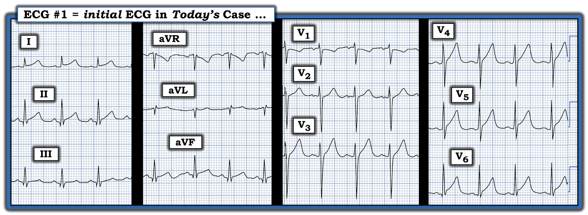
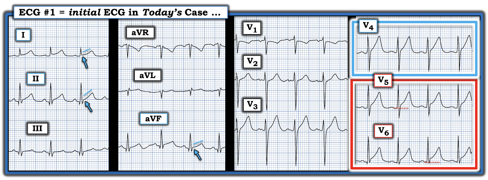

ECG Blog #448 — Một nam thanh niên bị đau ngực ...
Điện tâm đồ ở Hình-1 được ghi từ một người đàn ông trước đó khỏe mạnh, mới ngoài 20 tuổi — ban đầu đến khám vì các triệu chứng tiêu hóa, sau đó tiến triển thành CP (đau ngực — Chest Pain).
- Bệnh nhân được cho là bị lo âu.
CÂU HỎI:
- Với bệnh sử nêu trên — BẠN sẽ diễn giải thế nào về điện tâm đồ ban đầu ở Hình-1?
- Tuổi của bệnh nhân có ảnh hưởng đến cách diễn giải của bạn không?


TRẢ LỜI:
Như đã nhấn mạnh trong ECG Blog #205 — tôi ưa dùng Quy trình 2 Bước để diễn giải bất kỳ điện tâm đồ nào:
- BƯỚC #1 = Phân tích mô tả — trong đó chúng ta chỉ đơn giản đánh giá 6 Thông số CHÍNH là Tần số (Rate) — Nhịp (Rhythm) — Khoảng (PR-QRS-QTc) — Trục — Lớn các buồng tim — và Thay đổi Q-R-S-T — nhưng chưa bình luận gì về ý nghĩa lâm sàng của những đánh giá này.
- BƯỚC #2 = Nhận định lâm sàng — trong đó chúng ta đối chiếu đánh giá đã thực hiện ở Bước #1 với tình huống lâm sàng hiện tại. Ví dụ, xem xét bất kỳ triệu chứng nào bệnh nhân có thể có (tức là đau ngực, hồi hộp đánh trống ngực, khó thở, v.v.) — điều đó có thể có ý nghĩa gì khi nhìn vào điện tâm đồ đang xem.
Những điểm CHÍNH:
- Sử dụng cách tiếp cận hệ thống 2 Bước này không làm bạn chậm lại. Ngược lại — nó giúp bạn nhanh hơn, vì một khi bạn thường quy áp dụng một cách tiếp cận tuần tự, có hệ thống — bạn sẽ thấy mình không còn phải xem đi xem lại điện tâm đồ để kiểm tra xem có bỏ sót gì không.
- ĐIỂM THEN CHỐT (PEARL) #1: Cách tôi đánh giá 6 Thông số CHÍNH là như nhau — bất kể tuổi của bệnh nhân. Dù vậy — những dấu hiệu điện tâm đồ mà bạn nhận ra có thể có ý nghĩa gì (nếu có) — sẽ tùy thuộc vào việc đối chiếu lâm sàng của bạn ở Bước #2.
- ĐIỂM THEN CHỐT (PEARL) #2: Lý do biết tuổi của bệnh nhân và lý do ghi điện tâm đồ càng sớm càng tốt lại hữu ích — là vì điều đó giúp ích rất nhiều cho việc đối chiếu lâm sàng. Ví dụ, trong ca hôm nay — biết bệnh nhân là một người trẻ tuổi xuất hiện đau ngực sẽ ngay lập tức làm tăng nhu cầu phải xem xét viêm cơ tim cấp trong chẩn đoán phân biệt.


Diễn giải CỦA TÔI về điện tâm đồ ban đầu của ca hôm nay:
Tôi đã ghi chú các dấu hiệu chính trên Hình-2 cho điện tâm đồ ban đầu của ca hôm nay:
- Nhịp là nhịp nhanh xoang tần số ~105 lần/phút.
- Tất cả các khoảng (PR, QRS, QTc) đều bình thường.
- Trục mặt phẳng trán bình thường, khoảng +70 độ.
- Xét theo tuổi còn trẻ của bệnh nhân — biên độ QRS không thỏa tiêu chuẩn lớn buồng tim.
Về Thay đổi Q-R-S-T:
- Có các sóng Q nhỏ và hẹp ở các chuyển đạo dưới và ở chuyển đạo V6. Đây nhiều khả năng là các sóng q vách bình thường. (Sóng khởi đầu ở chuyển đạo aVL là dương — nên có phức bộ rSr', nhưng không có sóng Q ở chuyển đạo này).
- Tăng tiến sóng R — bình thường, với biên độ sóng R tăng dần (mặc dù vùng chuyển tiếp hơi muộn, tới chuyển đạo V5 thì sóng R mới cao hơn độ sâu của sóng S).
Có những dấu hiệu ở ST-sóng T tinh tế nhưng quan trọng:
- "Mắt" tôi trước tiên bị thu hút vào 2 chuyển đạo nằm trong hình chữ nhật ĐỎ (tức là chuyển đạo V5 và V6 đều có điểm J chênh lên 2 mm — mức này nhiều hơn so với thường thấy ở hình ảnh tái cực bình thường).
- ST chênh lên ít hơn ở chuyển đạo V4 — nhưng vì tôi đã lo ngại về các chuyển đạo V5,V6 — tôi cho rằng ST-T ở chuyển đạo V4 có phần đoạn ST thẳng đuỗn, và lớn hơn mức lẽ ra phải có một cách không tương xứng so với sóng R có kích thước khiêm tốn ở chuyển đạo này (trong hình chữ nhật XANH).
- Bình thường, ở các chuyển đạo V2 và V3 có ST chênh lên nhẹ, dốc lên thoai thoải. Trong khi tôi cho rằng ST-T ở chuyển đạo V3 không có giá trị chẩn đoán — chuyển đạo V2 lại thiếu mức ST chênh lên nhẹ, dốc lên thoai thoải vốn thường thấy ở chuyển đạo này.
- Ở các chuyển đạo chi — có điểm J chênh lên nhẹ nhưng thật sự ở các chuyển đạo dưới và ở chuyển đạo I (các mũi tên XANH) — kèm đoạn ST thẳng đuỗn ở chính các chuyển đạo này (như các đường XANH nhạt cho thấy).
BƯỚC #2 = Nhận định lâm sàng của tôi về điện tâm đồ #1:
Tôi được gửi điện tâm đồ này kèm duy nhất những thông tin tôi đã nêu trong bệnh sử ở trên (tức là bệnh nhân là một người đàn ông trước đó khỏe mạnh, mới ngoài 20 tuổi — đến khám vì các triệu chứng tiêu hóa — rồi tiến triển thành đau ngực được cho là do lo âu).
- Tôi viết trả lời: "Đây không phải là một điện tâm đồ bình thường". Sau đó tôi nêu cụ thể các dấu hiệu đã trình bày ở trên trong phần Phân tích mô tả của tôi.
- Nhịp nhanh xoang là một mối lo ngại rõ ràng rằng có thể đang có một biến cố cấp tính. Hầu hết các chuyển đạo đều có một mức ST chênh lên — với ST chênh lên ở các chuyển đạo V5,V6 nhiều hơn mức thường thấy trong tái cực sớm và đoạn khởi đầu ST thẳng đuỗn bất thường ở nhiều chuyển đạo.
- XIN NHẤN MẠNH: Tôi hoàn toàn không chắc chắn điều gì đang diễn ra ở đây. Nhưng tôi đã viết trả lời như sau: "Đây có thể là tắc cấp động mạch LAD (tức là OMI cấp do LAD). Vì bệnh nhân này đang đau ngực — rõ ràng cần đánh giá thêm. Mặt khác — đây cũng có thể là OMI cấp vùng dưới-sau-bên. Dù thế nào — tôi sẽ ghi lại điện tâm đồ trong vòng 10-20 phút (và ghi liên tiếp sau đó) — xét nghiệm Troponin — và chắc chắn sẽ theo dõi cho đến khi có câu trả lời rõ ràng!
- Viêm màng ngoài tim thì hiếm — nhưng viêm cơ tim thì không hiếm, vì vậy đặc biệt ở nhóm tuổi này — cần thêm thông tin để nhanh chóng xác định đây có thể là nhồi máu cơ tim cấp, viêm cơ tim, hay không phải cả hai. Hãy cho tôi biết diễn tiến thế nào".
DIỄN TIẾN CỦA CA BỆNH:
Bác sĩ cấp cứu đã nhận ra các dấu hiệu điện tâm đồ bất thường mà tôi nêu ở trên — và chuyển bệnh nhân đến một trung tâm có khả năng can thiệp mạch vành qua da (PCI).
- Thật không may — bác sĩ tim mạch ở trung tâm đó đã không nhận ra các dấu hiệu điện tâm đồ bất thường. Bệnh nhân được cho xuất viện mà không ghi lại điện tâm đồ.
- Bệnh nhân bị ngừng tim ngoài bệnh viện. Anh ấy đã không thể được hồi sức thành công.
==================================
Có những Bài học cần rút ra từ ca hôm nay:
- Hãy điều trị người bệnh — Không phải điều trị tuổi của người bệnh!
- Nhồi máu cơ tim cấp có thể xảy ra ở bệnh nhân trẻ tuổi.
- Có những nguyên nhân gây đau ngực khác có thể nghiêm trọng ở người trẻ. Một số nguyên nhân khác này cũng có thể đe dọa tính mạng.
- NẾU có bất kỳ lo ngại nào từ bệnh sử và/hoặc vẻ ngoài của bệnh nhân — Đừng để quyết định của bạn bị chi phối bởi chỉ một điện tâm đồ duy nhất. Tôi hoàn toàn thừa nhận rằng từ điện tâm đồ ban đầu của ca hôm nay, tôi đã không chắc chắn bệnh nhân này có một vấn đề đe dọa tính mạng. Dù vậy — một loạt dấu hiệu tinh tế nhưng có thể đáng lo ngại có hiện diện trên bản ghi ban đầu hôm nay — và điều này phải báo hiệu cần đánh giá thêm cho đến khi có chẩn đoán rõ ràng.
- Hãy đọc điện tâm đồ một cách có hệ thống. Nếu bác sĩ can thiệp đọc một cách có hệ thống — các dấu hiệu điện tâm đồ bất thường được nêu bật ở Hình-2 lẽ ra đã được nhận ra.
- Đôi khi cần thông tim để phân biệt giữa nhồi máu cơ tim với viêm cơ tim.
==================================
ĐIỂM THEN CHỐT (PEARL) #3: Nhồi máu cơ tim cấp Có thể Xảy ra ở Bệnh nhân Trẻ tuổi!
Xin trích lời Dr. Stephen Smith: "Yếu tố nguy cơ tồi tệ nhất dẫn đến kết cục xấu trong nhồi máu cơ tim cấp là tuổi trẻ." Đó là vì các bác sĩ lâm sàng (kể cả quá nhiều bác sĩ tim mạch) khó chấp nhận sự thật rằng một bệnh nhân trẻ có thể bị nhồi máu cơ tim cấp (Xem phần bàn luận ca bệnh trong bài ngày 9 tháng 1 năm 2023 trên ECG Blog của Dr. Smith — cuối bài có đường dẫn tới một loạt ca khác minh họa hiện tượng này).
==============================
Tôi xin trích một phần Bình luận của tôi trong cùng bài ngày 9 tháng 1 năm 2023 đó — về nhồi máu cơ tim cấp ở bệnh nhân trẻ tuổi:
==============================
“Hãy điều trị người bệnh — Không phải điều trị tuổi của người bệnh”
Xu hướng xem nhẹ cơn đau ngực mới xuất hiện ở người trẻ như là triệu chứng thứ 1 của nhồi máu cơ tim cấp là điều dễ hiểu. Tắc động mạch vành cấp hầu như luôn xảy ra ở bệnh nhân đã qua lứa tuổi 20. Dù vậy — nhồi máu cơ tim cấp vẫn xảy ra ở bệnh nhân trẻ tuổi.
- Thực sự có y văn về chủ đề này (Sood và cs. — Cureus 15(4):e37102, 2023 — Gulati và cs. — Mayo Clin Proceed 95(1):136-156, 2020 — GGF van der Schoot và cs.: Neth Heart J 28(6):301-308, 2020 — và — Egred và cs. — Postgrad Med 81(962): 741-745, 2005 — chỉ kể ra vài báo cáo).
- Nhồi máu cơ tim cấp ở bệnh nhân trẻ tuổi có thể do tắc động mạch vành cấp — có thể được thúc đẩy bởi các yếu tố nguy cơ kinh điển (như hút thuốc lá từ khi còn nhỏ tuổi) — ở những người có cơ địa đặc biệt (tức là đột biến yếu tố V Leiden — hoặc hội chứng thận hư — cả hai đều liên quan tới tình trạng tăng đông) — và/hoặc trong các bệnh lý có tính gia đình như tăng cholesterol máu di truyền.
- Ngoài ra — có một loạt nguyên nhân tiềm tàng không do xơ vữa gây nhồi máu cấp ở bệnh nhân trẻ tuổi. Bao gồm co thắt động mạch vành (có thể do sử dụng cocaine hoặc uống rượu say quá độ) — cầu cơ tim (có thể là nguyên nhân gây thiếu máu cục bộ cấp từng đợt) — bất thường giải phẫu động mạch vành (có thể biểu hiện bằng vỡ đột ngột gây nhồi máu cấp hoặc đột tử ở bất kỳ tuổi nào!).
- Các loại nguyên nhân tiềm tàng không do xơ vữa khác gây nhồi máu cấp ở bệnh nhân trẻ tuổi gồm bệnh viêm hệ thống (tức là lupus, viêm khớp dạng thấp, u hạt Wegener) — huyết khối không do bệnh mạch vành (tức là viêm nội tâm mạc, rối loạn đông máu) — thai kỳ (với tình trạng tăng đông của nó).
- Gây tổn thương nội mạc là một cơ chế tiềm tàng khác của nhồi máu cơ tim cấp ở bệnh nhân trẻ tuổi. Điều này có thể xảy ra do chấn thương ngực kín hoặc một stress cấp khác tạo ra lực xé cực mạnh, đột ngột lên động mạch vành (có thể gây rách lớp áo trong dẫn đến huyết khối trong lòng mạch). Tổn thương nội mạc cũng có thể gặp khi bóc tách động mạch vành tự phát — hoặc do “chấn thương giảm tốc (tức là do tai nạn ô tô hoặc phương tiện giao thông khác).
- ĐIỀU CỐT LÕI: Mặc dù các căn nguyên nêu trên không phải là nguyên nhân thường gặp của nhồi máu cấp ở thanh thiếu niên hoặc người trẻ tuổi — chúng vẫn xảy ra! Và, như hầu hết các cân nhắc chẩn đoán trong y khoa — nếu chẩn đoán phân biệt loại trừ những "căn nguyên tiềm tàng khác" như vậy chỉ vì chúng không thường gặp, hoặc vì bệnh nhân "còn quá trẻ để bị nhồi máu cơ tim" — thì những căn nguyên tiềm tàng khác này sẽ bị bỏ sót!
- LIÊN HỆ với ca này: Mặc dù người trẻ tuổi trong ca hôm nay đến khám vì các triệu chứng tiêu hóa (được cho là nặng thêm do lo âu) — tình trạng này đã tiến triển thành đau ngực rõ rệt. Vì vậy, dù bản thân bệnh sử hôm nay không đặc biệt gợi ý một biến cố mạch vành cấp — khi kết hợp với các dấu hiệu điện tâm đồ bất thường và đau ngực kéo dài — rõ ràng có chỉ định đánh giá thêm.
- T.B. (P.S.): Với bệnh sử của ca hôm nay và các dấu hiệu điện tâm đồ bất thường — cần đưa viêm cơ tim cấp vào các cân nhắc chẩn đoán. Có những lúc việc phân biệt giữa viêm cơ tim cấp với OMI cấp ở một bệnh nhân trẻ có thay đổi điện tâm đồ trông như cấp tính và troponin tăng chỉ có thể thực hiện được bằng thông tim. Những lúc khác, khi rất nghi ngờ viêm cơ tim cấp chứ không phải nhồi máu cơ tim cấp — MRI tim có thể cho hình ảnh đủ rõ ràng để khẳng định chẩn đoán viêm cơ tim cấp.
==================================
Lời cảm ơn: Xin cảm ơn Kashif Aleem (từ Sargodha, Punjab, Pakistan) đã cung cấp ca bệnh và các bản ghi này.
==================================